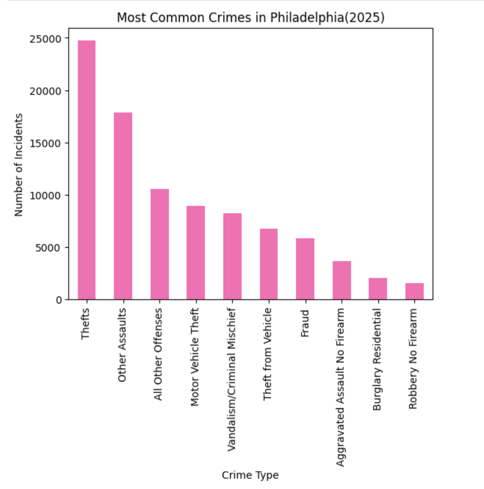
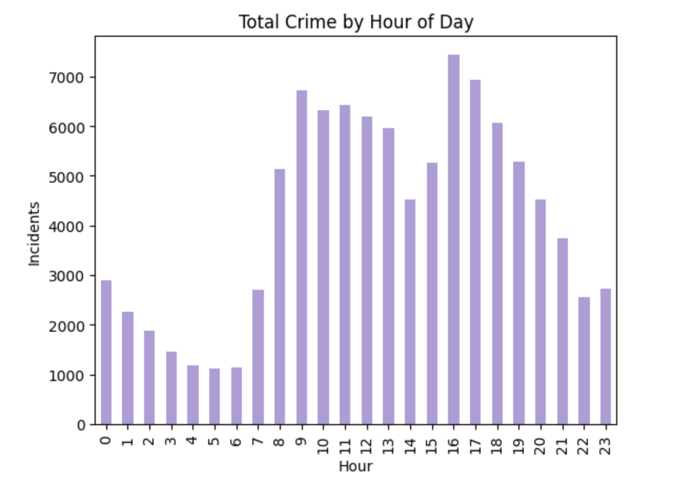
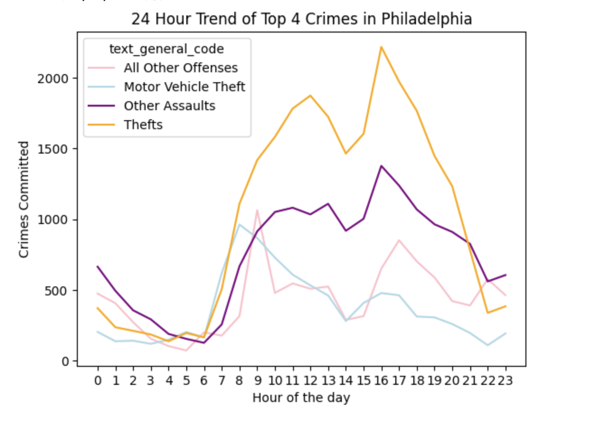

Introduction:
Crime in cities is often discussed in terms of where it happens, with certain neighborhoods gaining reputations for higher levels of criminal activity. However despite this observation, people tend to forget about another relevant aspect– Time.
Throughout a typical day, the rhythms of daily life shift as people go to work, go out at night, and move through public spaces. Crime statistics don’t just change by location, but by the hour of the day.
Because of this, it’s reasonable to expect that different types of crime may occur at different times of day. A crowded afternoon in a busy commercial area may create opportunities for theft, while late-night hours might see more conflicts between individuals. When you start to look at crime data through the filter of time, patterns can begin to emerge that are not obvious at first glance.
This raises an interesting question: do certain types of crime tend to occur at specific hours of the day? Using Philadelphia police incident data from 2025, I analyze when different crimes are most likely to happen by examining the most common offenses reported during each hour of the day. By exploring how crime patterns shift over a 24-hour period, we can better understand how daily human activity shapes the types of incidents that occur across a city.
Top Crimes Committed in Philadelphia in 2025:
Before exploring how crime patterns change throughout the day, it is helpful to first understand which offenses occur most frequently overall. By counting the number of incidents for each crime category in the dataset, we can identify the most common types of crime reported in Philadelphia in 2025.
Looking at the top ten offenses provides a clearer picture of which crimes dominate the dataset and therefore have the greatest impact on overall crime trends.

Looking at this graph, it is clear that “Theft” and “Other Assuaults” are the most common crimes in Philadelphia. Once we know which crimes appear most frequently, we can begin to investigate whether these offenses follow similar patterns throughout the day, or if different crimes tend to occur at different hours.These crimes will also continue to be shown as this analysis gets more in depth.
The Rise and Fall of Crime over 24 Hours:
After identifying the most common crime categories in the dataset, the next step is to look at when crime occurs throughout the day. Rather than focusing on specific types of crime, this visualization looks at the total number of reported incidents during each hour of the day. By grouping incidents by hour and plotting the results, we can observe how crime activity rises and falls across a 24-hour period.

The chart shows that crime is not evenly distributed throughout the day. Certain hours experience noticeably higher numbers of incidents than others. Periods when more people are active in public spaces—such as the afternoon and evening—often show increased levels of reported crime. Around the huors of rush hour and dinner time, crime appears to have increased. In contrast, the early morning hours typically see fewer incidents, likely reflecting lower levels of activity across the city.
This gives deeper insight into the reasons crime acvtiviy increases and decreases through out the day. Personally, I was a bit surprised that crime was highest during the dinner/evening hours. Most people would likely think that crime rates would be higher during the night time hours.
Although, its important to keep in mind that this is only general crime rates. This visualization shows when crime overall tends to occur most frequently, but it does not tell us which types of crime are contributing to these patterns.
Rise and Fall of Top 4 Crimes in Philadelphia
While the previous chart showed how total crime fluctuates throughout the day, it does not reveal which specific offenses are driving these patterns. To explore this further, I focused on the four most common crimes in the dataset and examined how frequently each occurs during every hour of the day. Plotting these trends side by side provides a clearer picture of how different types of crime follow distinct daily patterns.
